2013 Horses
2013 Horses | 2012 Horses | 2011 Horses | 2010 Horses
2009 Horses | Broodmares | Sold
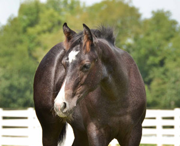
Lopen Real Good
SIRE: Lazy Loper DAM: Goodbars Glamourgirl (Zippos Mr Good Bar)
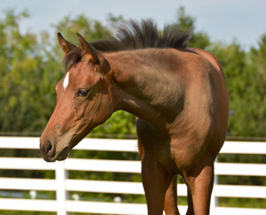
Lopes N Dreams
SIRE: Lazy Loper DAM: Mysterious Dream TB
Mysterious Dream TB is the dam of Custom Charlie and Custom Blue Skies!
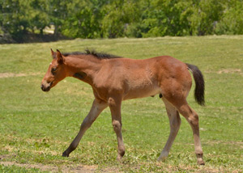
2013 Colt
SIRE: Lazy Loper DAM: Good Kinda Rain
Daughter of Zippos Mr Good Bar and out of the great mare, Rhapsody In The Rain.
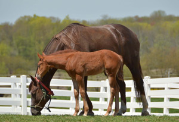
SOLD
Willy Gonna Bea Star
2013 Colt
SIRE: Winnies Willy DAM: Blazing Hot Star (Blazing Hot)
Dam is AQHA Champion producer and Superior producer. Congratulations to Silvia Dumont, France
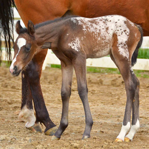
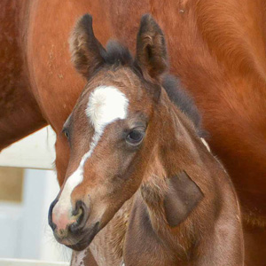
SOLD
2013 Filly
SIRE: Invitation Only DAM: Razzberry Rhumba (ApHC)
Dam is multiple ApHC World Champion. Congratulations to Kip & Barbara Shepard, South Windsor, CT.
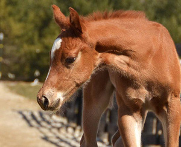
2013 Colt
SIRE: Invitation Only DAM: Kissed N Zipped
Dam is a multiple Congress top 5 Western Pleasure and dam of "Just Too Lazy To Zip" 45+ points at 3yrs old
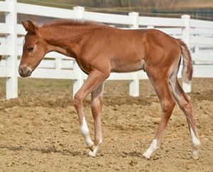
2013 Colt
SIRE: Invitation Only DAM: A Certain Blaze
Dam is Reserve Champion Reichert Equine Sports Medicine winner.
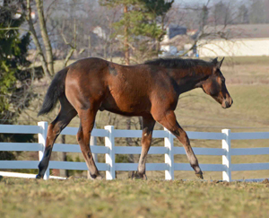
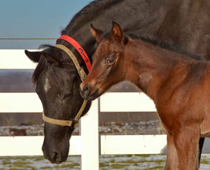
2013 Filly
SIRE: Invitation Only DAM: Wildly Available
Dam is a Congress and World Champion producer. This filly is a full sister to "Only Rave Reviews"
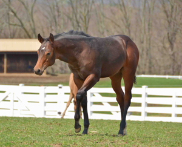
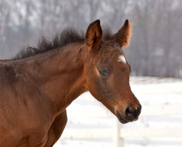
2013 Colt
SIRE: Invitation Only DAM: Zippos Bewitched
Dam is a multiple Congress Champion producer and Reserve World Champion producer.
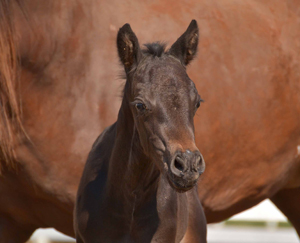
2013 Colt
SIRE: Invitation Only DAM: Form The Line Behind
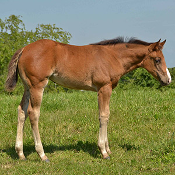
2013 Filly
SIRE: Lazy Loper DAM: Diamonds Impulse (Impulsions)
Dam is a full sister to Red Hot Impulse and this is her second foal
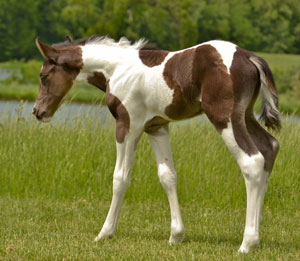
SOLD
2013 Colt
SIRE: Lazy Loper DAM: KT Lucky Breeze (APHA)
Congratulations to Elaine Rownd on the purchase of this fancy colt!
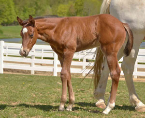
SOLD
2013 Colt
SIRE: Lazy Loper DAM: My Invested Machine (A Good Machine)
Congratulations to new owners, Tera & John Gore!
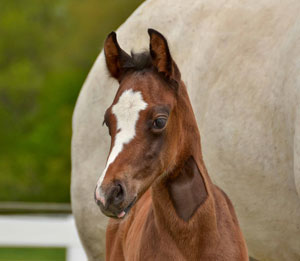
2013 Colt
SIRE: Lazy Loper DAM: Only Roses Will Do (Invitation Only)
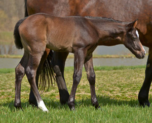
2013 Colt
SIRE: Lazy Loper DAM: Goodbars Glamougirl (Zippos Mr Good Bar)
Dam is multiple Congress and World Champion producer
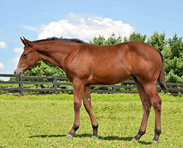
Love Me Some Lazy
SIRE: Lazy Loper DAM: Almost Good (Zippos Mr Good Bar)
Dam is out of the great show mare, Ms. RD Booty. Her oldest foal is 2yrs. old.
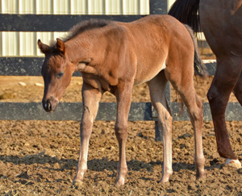
SOLD
She Bee Lopin
SIRE: Lazy Loper DAM: She Bee A Chex (Zippo Pine Chex)
Dam of "Lopin For A Chex" Congress Champion and Honor Roll Amateur Western Pleasure. This is her 2nd foal.
Congratulations to Peek Owen.
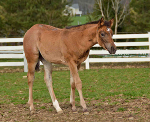
2013 Filly
SIRE: Lazy Loper DAM: Good Special Miss (Zippos Mr Good Bar)
Dam is multiple Honor Roll producer, Multiple Superior Producer and Reserve World Champion producer.
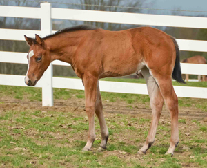
2013 Filly
SIRE: Lazy Loper DAM: Zinvitation (Invitation Only)
Zinvitation is out of the great mare, Elegant Zippo, Reserve Congress and Reserve World Champion producer.
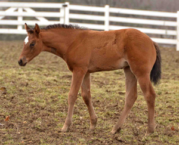
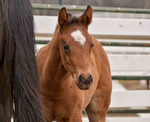
2013 Filly
SIRE: Lazy Loper DAM: Chex Are Good (Zippo Pine Chex)
Dam of "Chex Out My Lope" 2 x Southern Belle Champion
and multiple point earner.
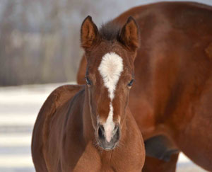
2013 Filly
SIRE: Lazy Loper DAM: Zippity Good Bar
Dam is a Multiple Congress Champion producer and World Champion producer.
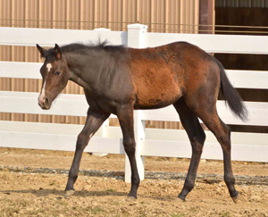
2013 Colt
SIRE: Lazy Loper DAM: Investment A Ward
Dam is a multiple World and Reichert Champion producer. This colt is a full brother to "Bein A Little Lazy" and "Lopin For My Award"
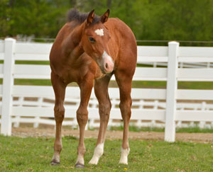
2013 Colt
SIRE: Lazy Loper DAM: Investment A Ward
Dam is multiple NSBA World Champion producer. Full sibling to "Bein A Little Lazy" and "Lopin For My Award"
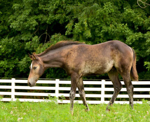
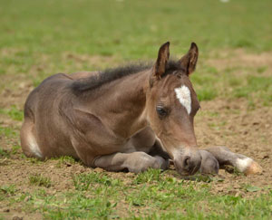
Willy The One
SIRE: Winnies Willy DAM: Potential Ami (Potential Investment)
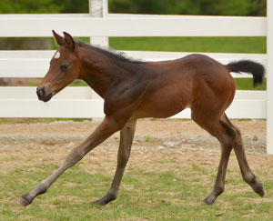
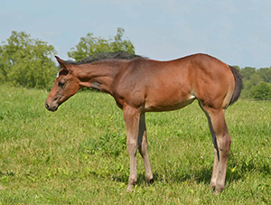
2013 Filly
SIRE: Winnies Willy DAM: An Awesome Marquis (An Awesome Mister)
Owned by John Comas & Tina Vizzard.
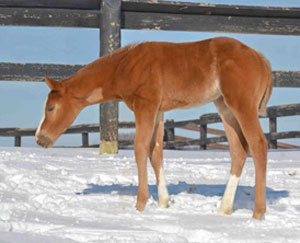
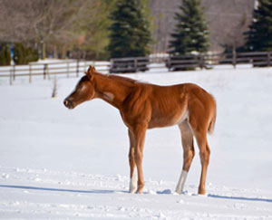
2013 Filly
SIRE: Winnies Willy DAM: Im Rich N Diamonds
Owned by Amanda Rohr
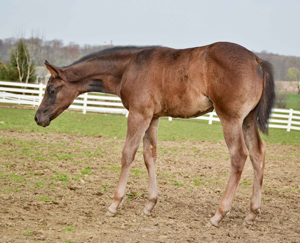
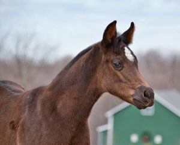
SOLD
2013 Filly
SIRE: Winnies Willy DAM: Awsome Abrey (Barpassers Image)
Dam of "Do Ya Like My Lope" multiple Futurity winner
and earnings of over 13,000.00
Congratulations to Dave & Patrice Tornes and AW Performance Horses.
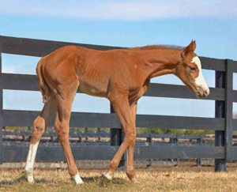
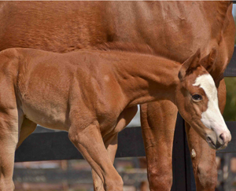
2013 Filly
SIRE: Winnies Willy DAM: Its Chip To You (Zips Chocolate Chip)
Dam is point earning producer and dam of Roger Sure Is Lazy.
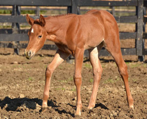
2013 Filly
SIRE: Zippos Mr Good Bar DAM: Polished Elegance
Dam is multiple point earning producer.